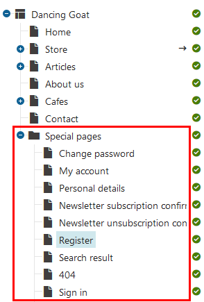
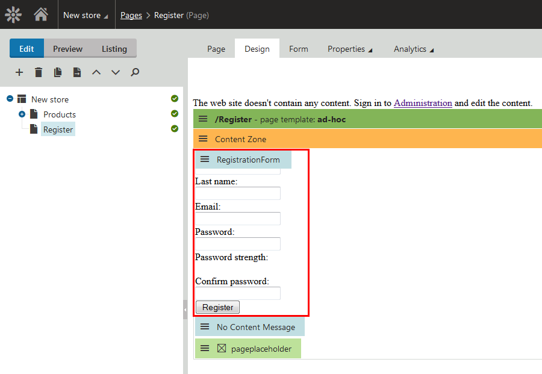
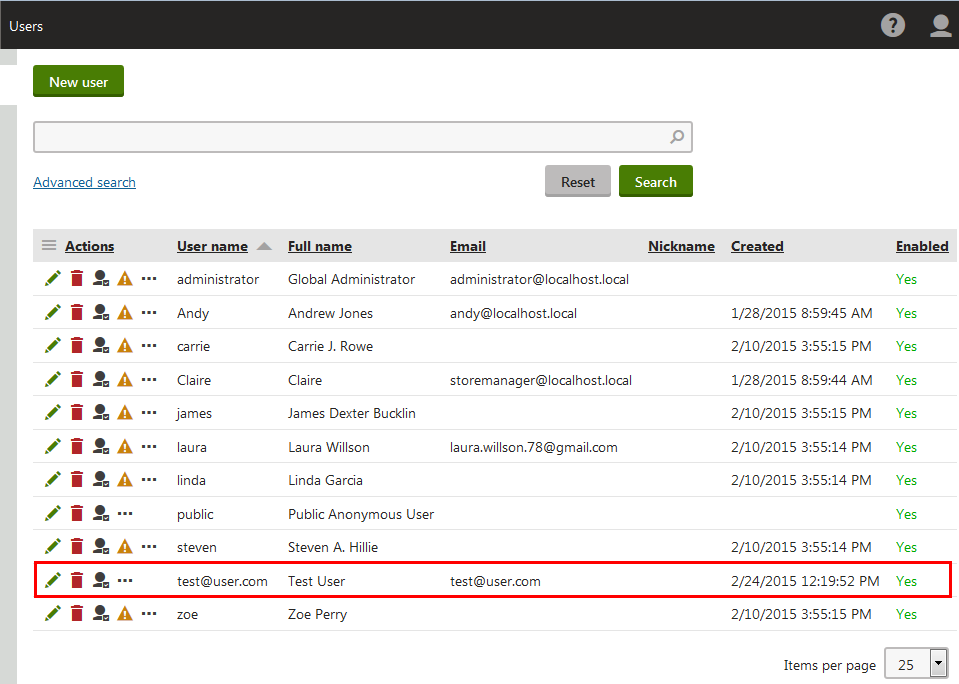

Configuring user registration in stores
Offer registration to your customers and allow them to save their addresses, to edit their private data, provide them personalized content and much more.
Kentico allows you to configure the authentication process with numerous of external services or you can create your own internal registration and sign-in. If you want to set up authentication via an external service, you can do it with:
You can also customize your Kentico and implement a custom external authentication. On this page, you can find basic information about required web parts and settings for creating internal registration and sign-in.
To learn more detailed information about registration and authentication, see User registration and authentication.
Creating internal registration and sign-in
Registration process
Before you start solving sign-in procedure, set up registration. For registering, you can use either the Registration form web part or the Custom registration form web part.
Using email addresses as user names
If you want to use a customer's email address as their user name for signing-in, you need to solve different sets of allowed characters. For example, email addresses are by default valid with plus symbols (+), but user names cannot contain this character. You can adjust the behavior with the CMSUserValidationRegEx web.config key.
Using the Registration form web part
The Registration form provides a basic ready-made registration form. You can place the web part onto any page without setting any properties. To create such a registration page:
Create a new page in the Pages application.
If you create a page based on the parent template, do not forget to clone the template as ad-hoc or save it as a new template on the Properties -> Template tab.
Create the page in a folder with special pages (registration, search results, error 404 page, etc.) to easily separate these pages from pages in the site navigation.

The Special pages folderPlace the Registration form web part on the page.
(Optional) Change properties of the registration web part.
Save & Close the web part.

Placed registration form
If you now open the page on the live site and register a user, you will see the user in the Users application.

Newly created user
Configuring user registration in stores
Using the Custom registration form web part
Use the Custom registration form web part for situations where you want a different registration form than the one provided by the Registration form web part. For example, when you want users to provide different information during registration or if you wish to customize the form's layout.
See an example in Using the Registration form and Custom registration form web parts.
Sign-in and sign-out process
To enable signing in, use the same process as for the Registration form web part but place the Logon form web part on the sign-in page. In the properties of the web part, you can, for example, set where the user is redirected after signing in.
For signing out, place the Sign out button web part on a page.
See the sample Dancing Goat site to learn practical use of the sign-in/sign-out process.
Pre-defined objects and settings of registered customers
One of the advantages of registered customers is that the system remembers their previous orders and settings.
By default, if a registered customer signs in, the store switches to the currency of their last order on the site. Also, when a registered customer goes through the checkout process, the payment method and shipping option from their last order are pre-filled in their fields.
See Customizing customers' preferred currency, payment method and shipping option to learn how to change the default behavior.